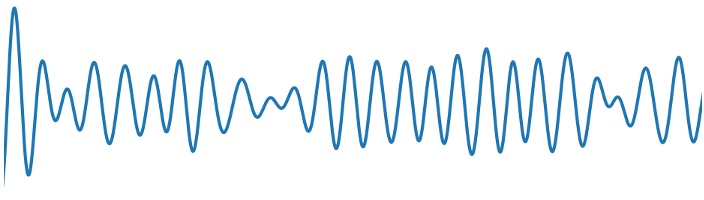
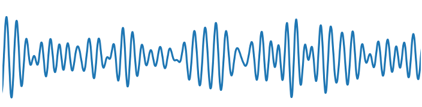
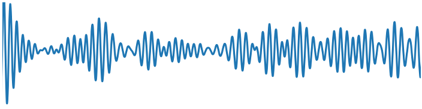
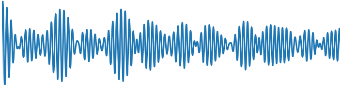
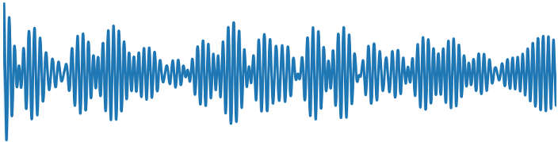
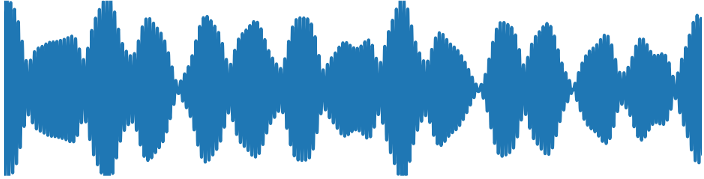

What Are These Sounds?
These audio files represent the vibrational dynamics of a dipeptide molecule simulated using Frequency-domain Integrator Molecular Dynamics (FIMD). Each sound corresponds to a specific frequency band of molecular vibrations, allowing you to literally hear how different parts of the molecule move at different speeds.
The waveforms you hear are derived from the potential energy (PE) fluctuations of the molecule over time. As atoms vibrate—bonds stretching, angles bending, and molecular backbones twisting—the potential energy oscillates. These oscillations, when converted to sound, reveal the characteristic "voice" of each vibrational mode.
Low frequencies (300-600 cm⁻¹) produce deep rumbles representing slow backbone bending motions. Mid frequencies (600-1500 cm⁻¹) create tones from angle bending and torsions. High frequencies (2000-4000 cm⁻¹) generate rapid buzzing sounds from fast C-H and N-H bond stretches.
Listen to Each Frequency Band
| Frequency Band | Waveform | Audio Player |
|---|---|---|
|
300-600 cm⁻¹
Backbone bending, twisting
|
 |
|
|
600-900 cm⁻¹
Out-of-plane bending
|
 |
|
|
900-1200 cm⁻¹
C-C stretches, rocking
|
 |
|
|
1200-1500 cm⁻¹
C-N stretches, bending
|
 |
|
|
1500-2000 cm⁻¹
C=O stretches (amide I)
|
 |
|
|
2000-4000 cm⁻¹
C-H, N-H stretches
|
 |
🎹 Play the Molecule
In FIMD, each frequency band is a self-contained slice of the molecule's motion. Here, each band becomes a playable instrument built from its own recorded energy-fluctuation audio: pick a band, and the page loads that WAV, finds its dominant pitch, and lets you transpose the real sound across the keys. The pitch you press sets the note; the band sets the voice. (If the page is opened directly from disk, browsers block loading the WAVs and a synthesized fallback is used — see the status line below.)
Click the keys, or use your computer keyboard. Lower octave: A W S E D F T G Y H U J, continuing K O L P ; up to E5.
Press a key or pick a band to load its recorded audio.
How Are These Waveforms Generated?
The FIMD Simulation Process
The simulation uses Band-Limited Frequency-domain Integrator Molecular Dynamics (FIMD), which restricts molecular motion to specific frequency windows. This allows us to isolate and study different types of vibrational modes independently.
From Molecular Vibrations to Sound
- Molecular Dynamics Simulation: The dipeptide is simulated in the NVE ensemble (constant number of particles, volume, and energy) with dynamics restricted to a specific frequency band (e.g., 300-600 cm⁻¹).
-
Energy Tracking: At each timestep (0.1 fs), we compute the potential energy
V(x)from the full molecular force field and kinetic energyK = ½mv²from atomic velocities. -
PE Fluctuation Extraction: The mean potential energy is subtracted to isolate
oscillations:
ΔPE(t) = PE(t) - ⟨PE⟩. These fluctuations directly reflect how the molecular geometry deforms as modes vibrate. - Timescale Mapping: The simulation runs at picosecond timescales (1 ps = 10⁻¹² s), but human hearing operates at millisecond-to-second scales. We map 1 picosecond of simulation to 1 second of audio (adjustable with speed factor).
- Audio Resampling: The PE fluctuation time series is resampled to a standard audio sample rate (44.1 kHz) and repeated multiple times to create listenable-length audio files.
- WAV File Generation: The processed signal is normalized and saved as a 16-bit PCM WAV file, ready for playback.
From Recorded Bands to a Playable Instrument
The audio players above are the FIMD energy traces — recordings of ΔPE(t) for each band. The keyboard plays those same recordings: when you select a band, the page loads its WAV, measures the dominant pitch of the energy-fluctuation signal by autocorrelation, and then uses that as the instrument's base note. Pressing a key transposes the real recorded sound to the chosen pitch (playback rate = note frequency / detected base frequency), and "Twinkle Twinkle" is sequenced from the same band recording. The keys therefore come directly from the band's energy fluctuations rather than from a synthesized approximation.
Because browsers block reading local files through the Web Audio API, the recordings load only when
the page is served over http:// (for example python -m http.server run in
the folder). If the page is opened directly from disk, the keyboard falls back to a synthesized
voice whose timbre is derived from the band's frequency window, and the status line under the
keyboard says which mode is active.
Physical Interpretation
The audio waveforms directly represent energy flow within the molecular system. When you hear oscillations, you're hearing the molecule's potential energy rising and falling as bonds compress and extend, angles open and close, and torsions rotate back and forth.
Why PE fluctuations? Potential energy captures the "restoring forces" that drive vibrations. When a bond stretches beyond equilibrium, PE increases; when kinetic energy converts back to potential energy, you hear the characteristic frequency of that vibrational mode.
Each frequency band isolates different types of motion: slow collective motions (low frequency) versus fast local bond vibrations (high frequency). By sonifying each band separately, we can aurally distinguish these different dynamical timescales.